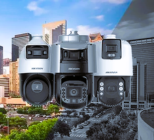

"Lo invitamos a que conozca nuestros servicios con el respaldo de un grupo de profesionales altamente capacitados en materia de seguridad privada."
Las cámaras de seguridad son dispositivos electrónicos diseñados para capturar imágenes y videos de un área específica con el fin de monitorear y proteger propiedades, personas o activos. Estas cámaras pueden ser instaladas en interiores o exteriores y están equipadas con diversas funciones como visión nocturna, detección de movimiento, grabación continua o por eventos, y transmisión en tiempo real a través de internet. Son utilizadas en una amplia gama de entornos, incluyendo hogares, negocios, instituciones públicas y espacios urbanos, con el propósito de disuadir el crimen, mejorar la seguridad y proporcionar evidencia en caso de incidentes.
